Multi-Tool
- 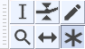
The image above shows the Tools Toolbar with the Multi Tool selected.
- Click on this link to learn more about the Tools Toolbar.
- Click on other tools in the image to learn more about those tools.
| If you quit Audacity with Multi-Tool selected then it will be selected upon reopening Audacity. Otherwise, Selection Tool will always be selected upon reopening Audacity, irrespective of which of the separate tools was selected when you quit. |
Using Multi-Tool
To use Multi-Tool Mode, click the  button on the Tools Toolbar or press F6 on the keyboard.
button on the Tools Toolbar or press F6 on the keyboard.
Multi-Tool Mode automatically selects one of the five tools on the Tools Toolbar according to mouse moves and key presses. The mouse pointer changes to show which of its functions is currently available (the pointer will appear similar to the button for the relevant tool on the toolbar).
Selection Tool
Selection Tool is available when the mouse is in an area that does not trigger the Envelope Tool or the Time Shift Tool. The pointer will appear as  . See Selecting Audio with the Mouse for more details.
. See Selecting Audio with the Mouse for more details.
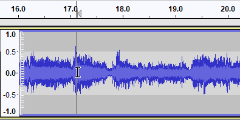 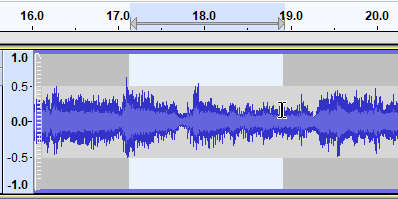 Click to position the cursor Drag cursor to select a region
Envelope Tool
Envelope Tool is made available by hovering the mouse pointer over the waveform either on the blue horizontal envelope boundary or at half the distance of the envelope boundary to the center line. The pointer then changes to . Click and drag with the mouse and then use envelope tool as you would use the standalone Envelope Tool.
{kind=link}
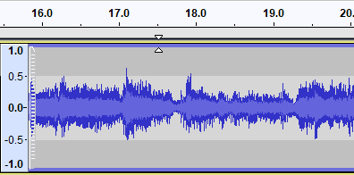 You can drag from the half-way point You can drag from the envelope boundary
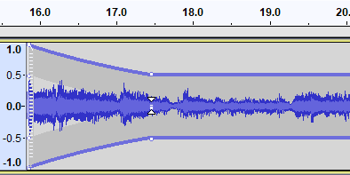 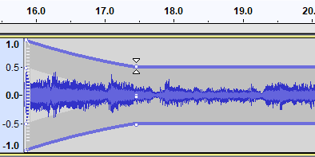 Dragging from the half-way point Dragging from the envelope boundary
Draw Tool
Draw Tool is made available by zooming in until you can see individual samples then hovering the mouse pointer close to the line joining the samples. The pointer then changes to a pencil tool and you can use it as you would use the standalone Draw Tool.
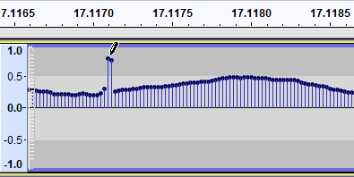 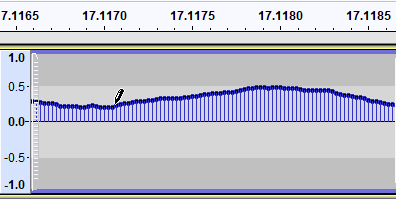 Draw Tool prior to making a repair Draw Tool after drawing the repair
Zoom Tool
For horizontal scale zooming right-click (Ctrl + click on a Mac) the mouse at a point to zoom-out by a factor of 2, centered on the click point. Alternatively right-click, drag and release to zoom-in to a drag-selected region.
If you commence a horizontal or vertical drag to zoom by mistake, you can press Esc before releasing the mouse button to cancel the zoom operation.
The illustration below shows a right-click drag zoom-in.
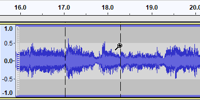 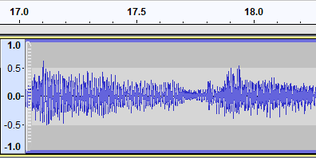 A right-click rightward drag to define the horizontal zoom Releasing the right mouse button effects the zoom
Time Shift Tool
Time Shift an individual clip
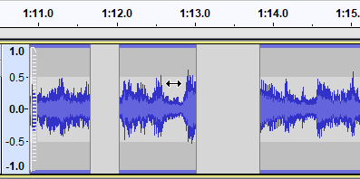 To shift an individual clip, hold down Ctrl (Cmd on Mac) while over one of the clips. The pointer will change to the Time Shift tool  . Then drag left or right with the mouse. You may also drag a clip that is fully under a drag bar by hovering over the bar, then drag when the Time Shift pointer appears.
. Then drag left or right with the mouse. You may also drag a clip that is fully under a drag bar by hovering over the bar, then drag when the Time Shift pointer appears.
Time Shift an entire track
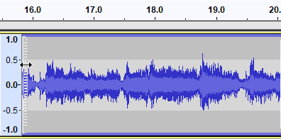 To shift an entire track hover over one of the drag bars at the left or right edge of the waveform. The pointer will change to . Then drag left or right with the mouse.
If the audio in the track is not fully under a drag bar, or if the track contains multiple clips, you must hold down while dragging from the drag bar to move the entire audio of the track.